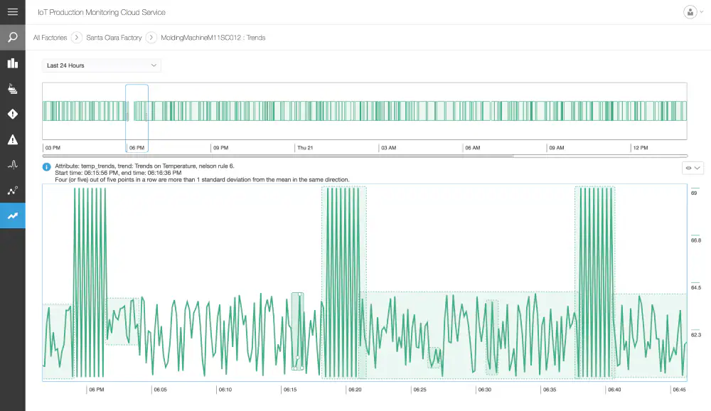

A Internet das Coisas (IoT) descreve a rede de objetos físicos incorporados a sensores, software e outras tecnologias com o objetivo de conectar e trocar dados com outros dispositivos e sistemas pela internet. Esses dispositivos variam de objetos domésticos comuns a ferramentas industriais sofisticadas. Com mais de 7 bilhões de dispositivos IoT conectados hoje, os especialistas esperam que esse número cresça para 10 bilhões em 2020 e 22 bilhões em 2025.
Nos últimos anos, a IoT se tornou uma das tecnologias mais importantes do século XXI. Agora que podemos conectar objetos do cotidiano - eletrodomésticos, carros, termostatos, babás eletrônicas - à Internet por meio de dispositivos incorporados, é possível uma comunicação perfeita entre pessoas, processos e outras coisas.
Por meio da computação de baixo custo, nuvem, big data, análise avançada e tecnologias móveis, coisas físicas podem compartilhar e coletar dados com o mínimo de intervenção humana. Nesse mundo hiperconectado, os sistemas digitais podem gravar, monitorar e ajustar cada interação entre itens conectados. O mundo físico encontra o mundo digital, e eles trabalham em conjunto.
Embora a ideia de IoT já exista há muito tempo, uma coleção de avanços recentes em diversas tecnologias diferentes tornou-a prática.
À medida que a IoT se torna mais difundida no mercado, as empresas estão capitalizando o enorme valor comercial que ela pode oferecer. Esses benefícios incluem:
Os Aplicações Inteligentes de IoT são aplicações de software como serviço (SaaS) predefinidos que podem analisar e apresentar dados capturados do sensor de IoT para usuários corporativos por meio de painéis. Temos um conjunto completo de Aplicações Inteligentes de IoT.
As aplicações de IoT usam algoritmos de machine learning para analisar grandes quantidades de dados de sensores conectados na nuvem. Usando painéis e alertas da IoT em tempo real, você obtém visibilidade dos principais indicadores de desempenho, estatísticas do tempo médio entre falhas e outras informações. Os algoritmos baseados em machine learning podem identificar anomalias no equipamento e enviar alertas aos usuários e até mesmo acionar correções automatizadas ou medidas proativas.
Com as aplicações IoT baseadas na nuvem, usuários corporativos podem aprimorar rapidamente os processos existentes para cadeias de suprimentos, atendimento ao cliente, recursos humanos e serviços financeiros. Não há necessidade de recriar processos de negócios inteiros.
A capacidade da IoT de fornecer informações sobre o sensor e ativar a comunicação dispositivo a dispositivo está impulsionando um amplo conjunto de aplicações. Veja a seguir algumas das aplicações mais populares e o que elas fazem.
As máquinas podem ser monitoradas e analisadas continuamente para garantir o desempenho dentro das tolerâncias exigidas. Os produtos também podem ser monitorados em tempo real para identificar e solucionar defeitos de qualidade.
O rastreamento permite que as empresas determinem rapidamente a localização dos ativos. O ring-fence permite que eles garantam que ativos de alto valor estejam protegidos contra roubo e remoção.
Os dispositivos vestíveis da IoT permitem que as pessoas entendam melhor sua própria saúde e permitem que os médicos monitorem remotamente os pacientes. Essa tecnologia também permite que as empresas rastreiem a saúde e a segurança de seus funcionários, o que é especialmente útil para trabalhadores empregados em condições perigosas.
Um exemplo disso é o uso de IoT para aumentar a eficiência e segurança em logística conectada para gerenciamento de frotas. As empresas podem usar o monitoramento da frota da Internet das Coisas para direcionar caminhões, em tempo real, para melhorar a eficiência.
Um exemplo disso é o uso de dispositivos IoT para ativos conectados para monitorar a saúde de máquinas remotas e acionar chamadas de serviço para manutenção preventiva. A capacidade de monitorar remotamente as máquinas também está habilitando novos modelos de negócio de produto como serviço, onde os clientes não precisam mais comprar um produto, mas pagam pelo uso.
As organizações mais adequadas para a IoT são aquelas que se beneficiariam do uso de dispositivos sensores em seus processos de negócios.
Fabricantes podem obter uma vantagem competitiva usando o monitoramento da linha de produção para permitir a manutenção proativa do equipamento quando os sensores detectam uma falha iminente. Os sensores podem realmente medir quando a produção está comprometida. Com a ajuda de alertas de sensor, os fabricantes podem verificar rapidamente a precisão do equipamento ou removê-lo da produção até que seja reparado. Isso permite que as empresas reduzam os custos operacionais, melhorem o tempo de atividade e melhorem o gerenciamento do desempenho dos ativos.
O setor automotivo espera obter vantagens significativas com o uso de aplicações de IoT. Além dos benefícios da aplicação da IoT nas linhas de produção, os sensores podem detectar falhas iminentes dos equipamentos nos veículos que já estão na estrada e podem alertar o motorista com detalhes e recomendações. Graças às informações agregadas coletadas pelas aplicações baseadas na IoT, fabricantes e fornecedores automotivos podem aprender mais sobre como manter os carros em movimento e os proprietários de carros informados.
Os sistemas de transporte e logística se beneficiam de uma variedade de aplicações de IoT. Frotas de carros, caminhões, navios e trens que possuem estoque podem ser redirecionadas com base nas condições climáticas, disponibilidade de veículo ou motorista, graças aos dados do sensor de IoT. O estoque em si também pode ser equipado com sensores para monitoramento de acompanhamento e rastreamento e controle de temperatura. Os setores de alimentos e bebidas, flores e produtos farmacêuticos costumam realizar estoques sensíveis à temperatura que se beneficiariam muito com as aplicações de monitoramento da IoT que enviam alertas quando as temperaturas aumentam ou caem para um nível que ameaça o produto.
As aplicações de IoT permitem que as empresas de varejo gerenciem estoques, melhorem a experiência do cliente, otimizem a cadeia de suprimentos e reduzam os custos operacionais. Por exemplo, prateleiras inteligentes equipadas com sensores de peso podem coletar informações baseadas em RFID e enviar os dados para a plataforma IoT para monitorar automaticamente o estoque e acionar alertas se os itens estiverem com pouca carga. Os beacons podem enviar ofertas e promoções direcionadas aos clientes para fornecer uma experiência envolvente.
Os benefícios da IoT no setor público e em outros ambientes relacionados a serviços são igualmente abrangentes. Por exemplo, os serviços públicos pertencentes ao governo podem usar aplicações baseadas na IoT para notificar seus usuários sobre interrupções em massa e até mesmo sobre interrupções menores nos serviços de água, energia ou esgoto. As aplicações de IoT podem coletar dados sobre o escopo de uma interrupção e implementar recursos para ajudar os utilitários a se recuperarem de interrupções com maior velocidade.
O monitoramento de ativos da IoT oferece vários benefícios ao setor de saúde. Médicos, enfermeiros e assistentes geralmente precisam saber a localização exata dos ativos de assistência ao paciente, como cadeiras de rodas. Quando as cadeiras de rodas de um hospital são equipadas com sensores IoT, elas podem ser rastreadas a partir da aplicação de monitoramento de ativos IoT para que qualquer pessoa que esteja procurando por uma possa encontrar rapidamente a cadeira de rodas disponível mais próxima. Muitos ativos hospitalares podem ser rastreados dessa maneira para garantir o uso adequado e a contabilidade financeira dos ativos físicos em cada departamento.
Além de rastrear ativos físicos, a IoT pode ser usada para melhorar a segurança do trabalhador. Os funcionários em ambientes perigosos, como minas, campos de petróleo e gás e usinas químicas e de energia, por exemplo, precisam saber sobre a ocorrência de um evento perigoso que possa afetá-los. Quando estão conectados a aplicações baseadas em sensores da IoT, eles podem ser notificados de acidentes ou resgatados deles o mais rápido possível. As aplicações de IoT também são usados para dispositivos vestíveis que podem monitorar a saúde humana e as condições ambientais. Esses tipos de aplicações não apenas ajudam as pessoas a entender melhor sua própria saúde, como também permitem que os médicos monitorem os pacientes remotamente.
A IoT está reinventando o automóvel, permitindo carros conectados. Com a IoT, os proprietários de carros podem dirigir seus carros remotamente. Por exemplo, pré-aquecendo o carro antes que o motorista entre nele ou chamando um carro remotamente por telefone. Dada a capacidade da IoT de habilitar a comunicação dispositivo a dispositivo, os carros poderão reservar seus próprios compromissos de serviço, quando necessário.
O carro conectado permite que fabricantes ou revendedores de automóveis vire o modelo de propriedade do carro de cabeça para baixo. Anteriormente, os fabricantes mantinham um relacionamento com compradores individuais (ou nenhum). Essencialmente, a relação do fabricante com o carro termina assim que ele é enviado para a concessionária. Com carros conectados, fabricantes de automóveis ou revendedores podem ter um relacionamento contínuo com seus clientes. Em vez de vender carros, eles podem cobrar taxas de uso dos motoristas, oferecendo transporte como serviço usando carros autônomos. A IoT permite que os fabricantes atualizem seus carros continuamente com o novo software, uma diferença radical em relação ao modelo tradicional de propriedade de automóveis, no qual os veículos depreciam imediatamente o desempenho e o valor.
© 2023 Gustavo Oliveira. All rights reserved.